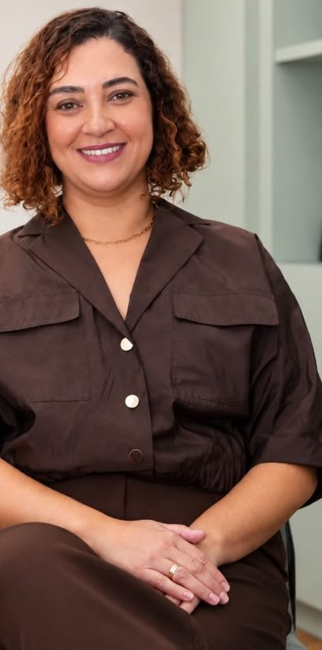
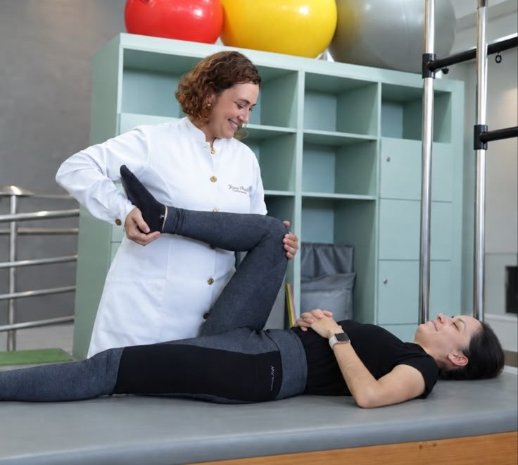

01
Fisioterapia e quiropraxia juntas
Duas abordagens complementares, usadas conforme a necessidade do seu caso, para aliviar a dor e recuperar o movimento.
Fisioterapia especializada em coluna · Itaúna/MG
Fisioterapia, quiropraxia e tratamento da dor com a Dra. Jéssica Oliveira. Uma avaliação cuidadosa para entender a origem do seu desconforto e um plano de tratamento feito para a sua rotina.

A dor na coluna raramente tem uma única explicação. Por isso, cada etapa do cuidado é pensada a partir da sua avaliação.
01
Duas abordagens complementares, usadas conforme a necessidade do seu caso, para aliviar a dor e recuperar o movimento.
02
O foco é tratar o que provoca a dor, para que você não precise recorrer a analgésicos toda vez que ela aparece.
03
Seu horário é reservado para você: tempo para ouvir, avaliar e explicar cada passo do tratamento sem pressa.
04
Consultório em Itaúna/MG e teleatendimento para quem não pode se deslocar ou mora em outra cidade.
Para quem é
Se a dor está limitando o seu trabalho, o seu sono ou as atividades de que você gosta, vale fazer uma avaliação.
Quero uma avaliação
Sobre a especialista
Fisioterapeuta · Quiropraxista · Tratamento da dor
“Cuidar das pessoas sempre fez sentido para mim.”
A possibilidade de ajudar alguém a recuperar movimentos, autonomia e confiança no próprio corpo é o que guia o trabalho da Dra. Jéssica. Com foco na saúde da coluna, ela une fisioterapia e quiropraxia clínica para que cada paciente volte a fazer o que gosta, com menos dor.
Também é colunista do quadro Você Melhor, da Band Minas, onde fala sobre dor, postura e cuidado com o corpo.
Como funciona
Você chama no WhatsApp, conta brevemente o que sente e escolhe entre atendimento presencial ou online.
Uma conversa sobre a sua história e a sua rotina, seguida da avaliação da coluna e da postura para entender a origem da dor.
Fisioterapia, quiropraxia e exercícios combinados conforme o seu caso, com objetivos claros explicados a você.
Reavaliações ao longo do processo e orientações para o dia a dia, para manter os resultados fora do consultório.
Preencha os campos ao lado e sua mensagem será aberta no WhatsApp, pronta para enviar. O atendimento é somente com hora marcada.
Se a conversa não abriu automaticamente, toque no botão abaixo para continuar o agendamento.
Abrir WhatsApp